Publications, Notes, and Errata
Web interface for finite size corrections in membrane MD
Mathematical Contest in Modeling
This page includes some commentary and PDFs and is updated from time to time, but the most recent list of publications is available via Google scholar.
* = equal contribution or alphabetical order| 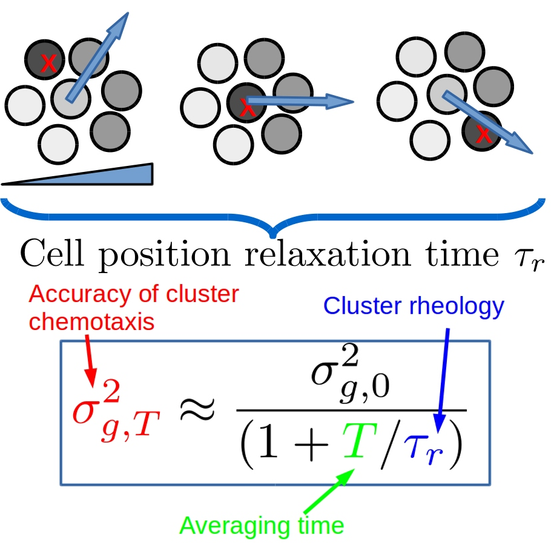 | Cell-to-cell variation sets a tissue-rheology-dependent bound on collective gradient sensingB.A. Camley and W.-J. Rappel, arxiv:1707.03532 [preprint] |
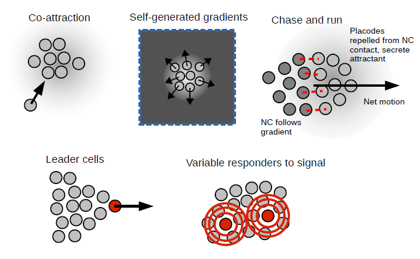 | Physical models of collective cell motility: from cell to tissueB.A. Camley and W.-J. Rappel Invited Review J. Phys. D. 2017, [link][pdf] |
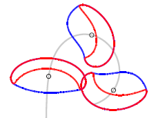 | Crawling and turning in a minimal reaction-diffusion cell motility model: coupling cell shape and biochemistryB.A. Camley*, Yanxiang Zhao*, Bo Li, Herbert Levine, and W.-J. Rappel[Editor's Suggestion] Phys. Rev. E 2017, [link][preprint] |
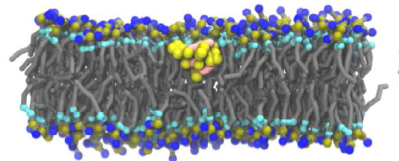 | Lipid and peptide diffusion in bilayers: the Saffman-Delbruck model and periodic boundary conditionsR.M. Venable, H.I. Ingolfsson, M.G. Lerner, B.S. Perrin, Jr.,B.A. Camley, S.J. Marrink, F.L.H. Brown, and R.W. Pastor J. Phys. Chem. B 2016, [link] To go with this paper, we built a web interface for estimating PBC corrections and membrane viscosities at diffusion.lobos.nih.gov (Work by me, Scott Perrin) |
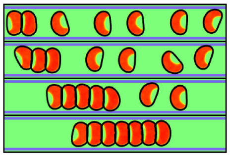 | Modeling contact inhibition of locomotion of colliding cells migrating on micropatterned substratesD.A. Kulawiak,B.A. Camley, and W.-J. Rappel PLOS Computational Biology 2016, [link][pdf] |
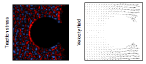 | Contact inhibition of locomotion determines cell-cell and cell-substrate forces in tissuesJ. Zimmermann, B.A. Camley, W.-J. Rappel and H. Levine PNAS (contributed by H. Levine) 2016, [link] |
| 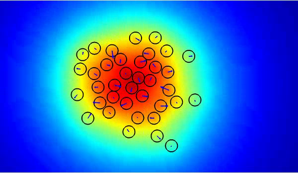 | Collective signal processing in cluster chemotaxis: roles of adaptation, amplification, and co-attraction in collective guidanceB.A. Camley, J. Zimmermann, H. Levine, and W.-J. Rappel PLOS Computational Biology [link][preprint] |
| 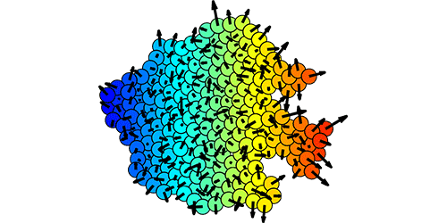 | Emergent collective chemotaxis without single-cell gradient sensing[Editor's Suggestion, Featured in Physics]B.A. Camley, J. Zimmermann, H. Levine, and W.-J. Rappel Phys. Rev. Lett. 2016, [link] [preprint] |
| 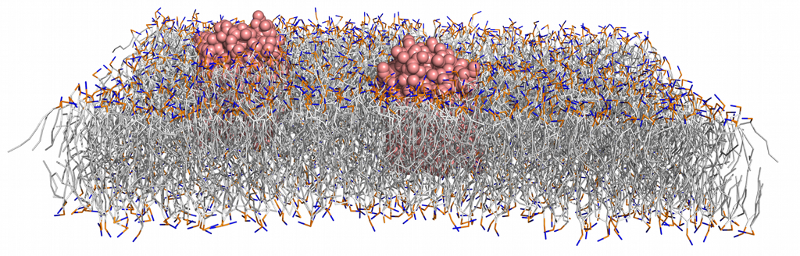 | Strong influence of periodic boundary conditions on lateral diffusion in lipid bilayer membranesB.A. Camley, M.G. Lerner, R.W. Pastor, and F.L.H. Brown, J. Chem. Phys. 2015, [link] Erratum: the MARTINI values in Table I were generated with L = 25 nm and H = 5 nm, not L = 15 nm and H = 2 nm. A web interface to compute the periodic diffusion coefficient from this paper and estimate membrane viscosities is available at diffusion.lobos.nih.gov (Work by me, Scott Perrin) |
| 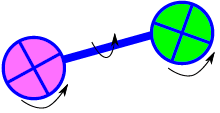 | Calculating hydrodynamic interactions for membrane-embedded objectsE. Noruzifar, B.A. Camley and F.L.H. Brown, J. Chem. Phys. 2014, [link] |
| 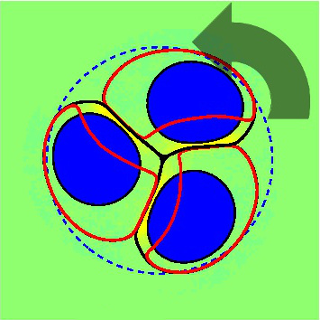 | Polarity mechanisms such as contact inhibition of locomotion regulate persistent rotational motion of mammalian cells on micropatternsB.A. Camley, Y. Zhang, Y. Zhao, B. Li, E. Ben-Jacob, H. Levine, and W.-J. Rappel, PNAS (contributed by H. Levine) 2014, [link] |
| 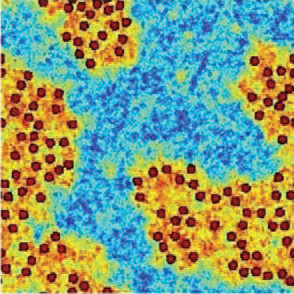 | Fluctuating hydrodynamics of multicomponent membranes with embedded proteinsB.A. Camley and F.L.H. Brown, J. Chem. Phys. 2014, [link] |
| 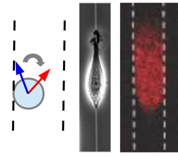 | Velocity alignment leads to high persistence in confined cellsB.A. Camley and W.-J. Rappel, Phys. Rev. E 2014, [link] [pdf] |
| 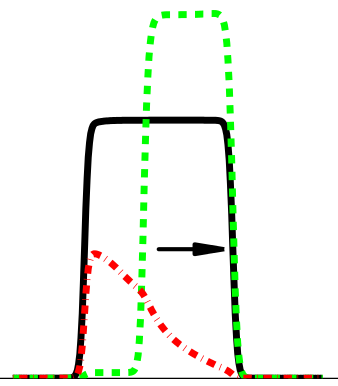 | Periodic migration in a physical model of cells on micropatternsB.A. Camley, Y. Zhao, B. Li, H. Levine, and W.-J. Rappel, Phys. Rev. Lett. 2013, [link] [pdf] |
Simulation of Edge Facilitated Adsorption and Critical Concentration Induced Rupture of Vesicles at a SurfaceP. Plunkett, B.A. Camley, K. Weirich, J. Israelachvili and P. Atzberger, Soft Matter 2013 (cover article), [link] [pdf] |
|
| 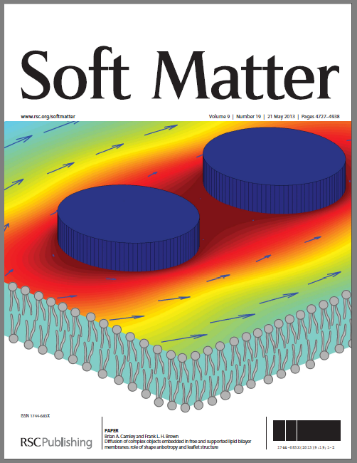 | Diffusion of complex objects embedded in free and supported lipid bilayer membranes: role of shape anisotropy and leaflet structureB.A. Camley and F.L.H. Brown, Soft Matter 2013 (cover article), [link] [pdf] There is a typo on p.4773 - the experimental range of b is roughly 107 poise/cm, not 10-7. |
| 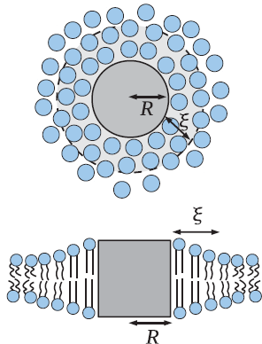 | Contributions to membrane-embedded-protein diffusion beyond hydrodynamic theoriesB.A. Camley and F.L.H. Brown, Phys. Rev. E. 2012, [link] [pdf] |
| 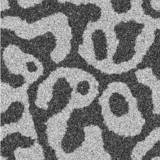 | Dynamic scaling in phase separation kinetics for quasi-two-dimensional membranesB.A. Camley and F.L.H. Brown, J. Chem. Phys. 2011 [link] [pdf] See also: Camley and Brown J. Chem. Phys. 2014 for more details and extensions to the method. Stanich et al. looked at scaling laws experimentally after we published. One point I think we didn't make strongly enough in this paper is that there could be other regimes that we didn't find - this is a very complicated problem, and we have not explored the boundary between regimes carefully! |
| 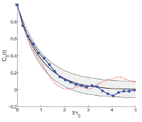 | Beyond the creeping viscous flow limit for lipid bilayer membranes: Theory of single-particle microrheology, domain flicker spectroscopy, and long-time tailsB.A. Camley and F.L.H. Brown, Phys. Rev. E. 2011, [link] [pdf] |
| 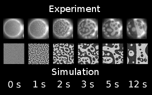 | Dynamic simulations of multicomponent lipid membranes over long length and time scalesB.A. Camley and F.L.H. Brown, Phys. Rev. Lett. 2010, [link] [pdf] This is a relatively short paper, and we have extended it: definitely see Camley and Brown J. Chem. Phys. 2011 and Camley and Brown J. Chem. Phys. 2014 for important details about the simulation algorithm and its application. The 2011 paper contains more details about the scaling laws and a proof that Stratonovich is the correct interpretation; the 2014 paper discusses more about the details of parameter matching (e.g. bare vs renormalized parameters) and numerical implementation. In particular, this paper shows simulations where the effective parameters match the input ones (domain at 0.8 pN bare line tension), and ones where they become renormalized (0.1 pN, where the domain shrinks). The 2014 paper explains more about when you would expect these renormalizations. Also note that statistical errors are pretty big in Fig. 1: refining this might require system size corrections (Camley et al. J. Chem. Phys. 2015) and comparison to the fluid domain diffusion coefficient. |
| 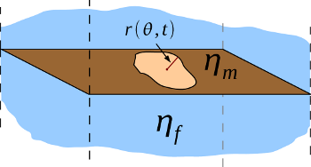 | Lipid bilayer domain fluctuations as a probe of membrane viscosityB.A. Camley, C. Esposito, T. Baumgart, and F.L.H. Brown, Biophys. J. 2010, [link] [pdf] [preprint pdf with better figures] |
| 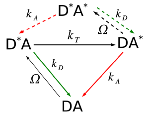 | Forster transfer outside the weak-excitation limitB.A. Camley, F.L.H. Brown, and E. Lipman, J. Chem. Phys. 2009, [link] [pdf] An interesting experimental paper on power-dependence that may be related is Nettels et al. 2015. |